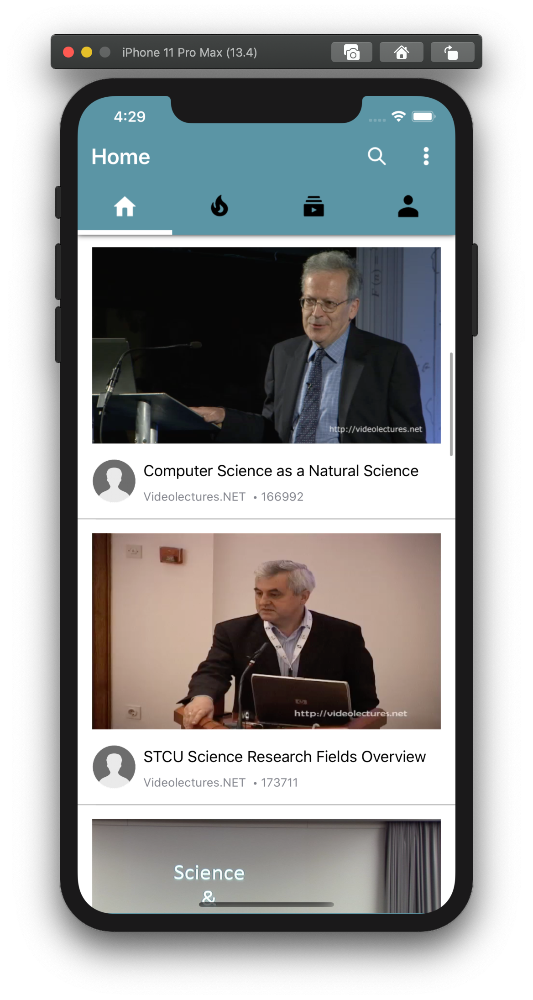
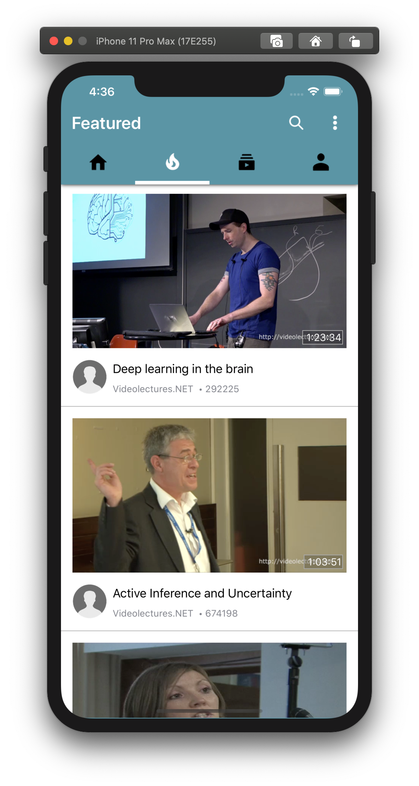
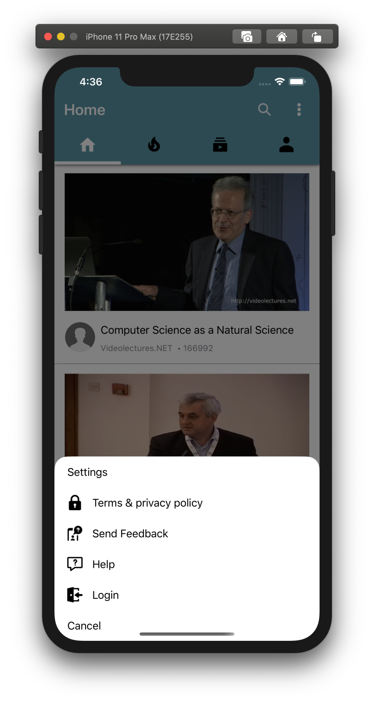
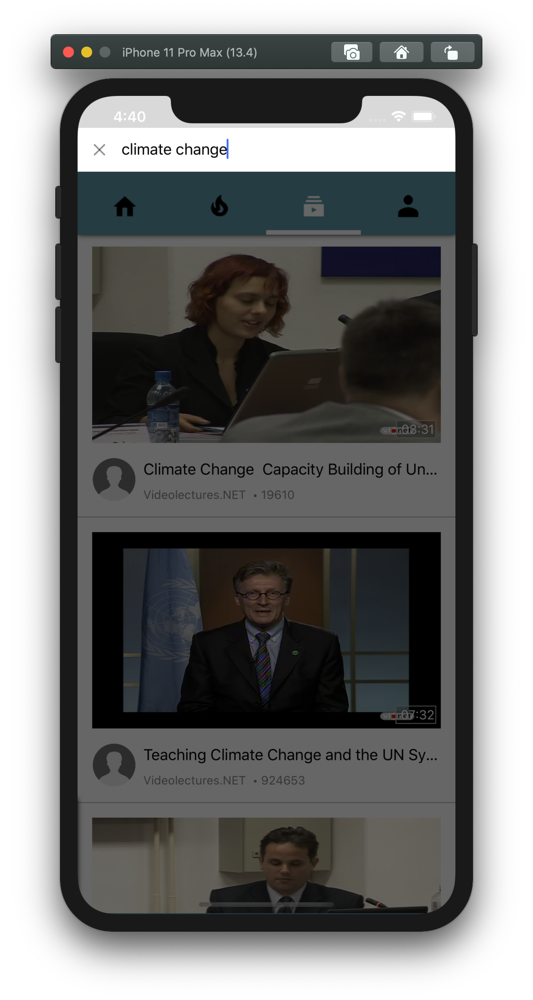
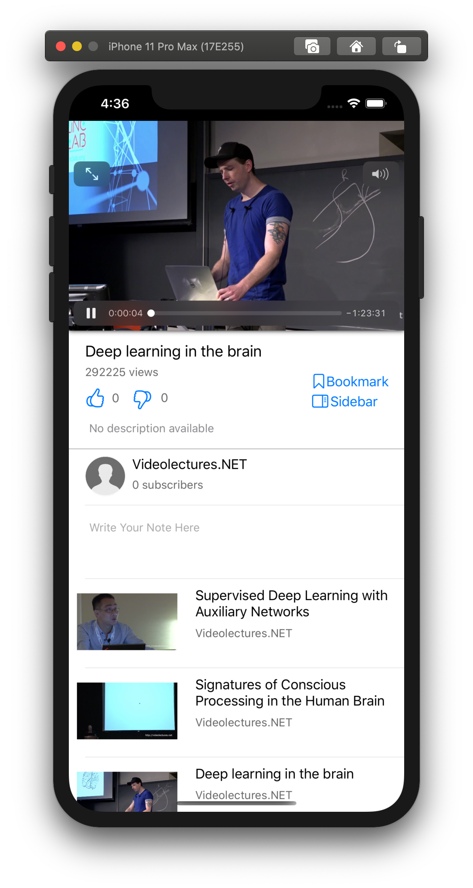
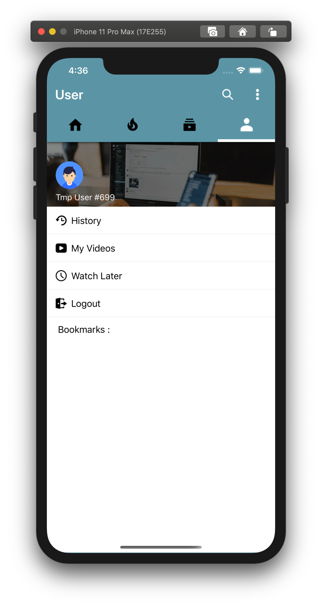

When you open the application, you are greeted with the Home Page.
To View what's popular on the server, click on navigation to go to Featured Page.
To Browse Settings, click on the three dots button on the navigation bar.
To Search for Contents, type your keyword in the bar above.
To Watch or Read Contents, click on the section and a View will be shown below.
To Manage the user you are logged in with, tap the right most navigation icon to view details and make changes accordingly.
